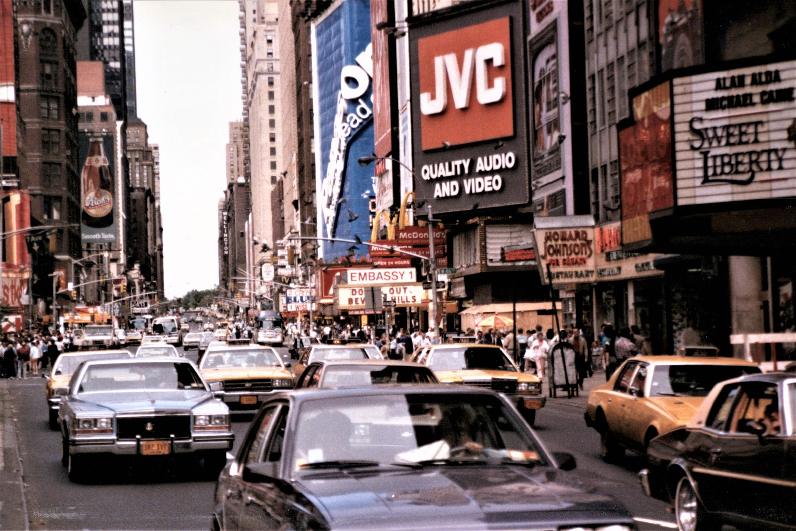
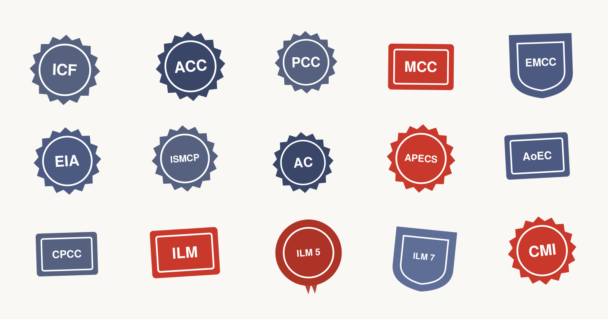
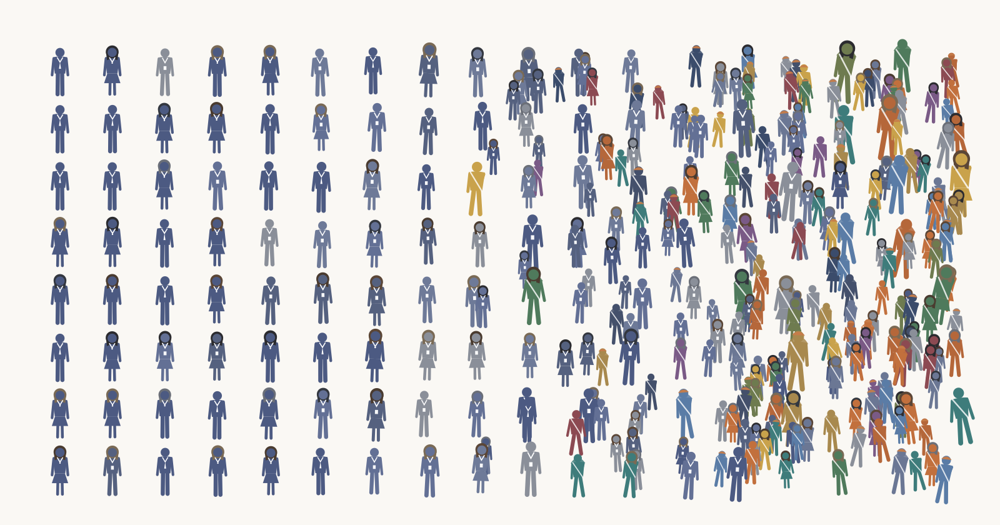

Foreword to Part II
In the early 1990s, being handed a coach at work usually meant that management had concerns about you. Today, senior leaders name and thank their coaches on stage. A practice that emerged out of the human-potential movement of the 60s and 70s took on a different flavour and entered a new phase of its life-cycle: in the 90s, coaching started to become a credentialed profession, and with this credential came growing respect and wider adoption. This is the second of three parts; in the first we identified the origins, now we look at how coaching grew from an idea to an established profession.

#5 The socio-economic shift that created a need for coaching
The human-potential movement, the trainers, and the newly-founded schools and organisations make up the visible and known part of the story of coaching’s rise to prominence. What also figured importantly was a transformation that took place in the leading western economies, which had experienced a growth-led stability since the end of the 2nd world war, driven in large part by infrastructure, transportation, telecommunications and globalisation. It was the emergence of the shareholder-value revolution, which signalled the end of guaranteed lifetime employment.
During the late 70s and 80s, the shareholder-value revolution resulted in mass layoffs. The implicit agreement — the loyalty of the company man in exchange for a managed career — gradually dissolved, and responsibility for a career began to shift from the institution to the individual.
During the same time, the US government dismantled price controls, entry barriers, and structural regulations across 6 sectors, while also increasing workplace safety (OSHA), environmental protection (EPA), consumer product safety (CPSC), and health standards (FDA) across all 20 sectors.
While the corporation no longer managed one’s career, increased competition and regulation also added a new level of complexity and performance pressures to the workplace environment.
While the human-potential movement had initially underpinned coaching’s context and language, the rising demand for it was driven by people becoming personally responsible for the career that their employers used to run. Conversely, corporations were also under a new level of regulatory control and financial accountability. The resulting pressure to grow shareholder value required ways to attract, develop and retain key executives; capabilities needed to expand continuously, driving an ever-widening search for ideas, frameworks and tools that could drive corporate performance.
#6 How coaching became an established profession
Economists categorise goods and services by how a buyer is able to judge its qualities. For coaching, these qualities can result in a significant range of values for the person being coached and the company he works for, such as economic, operational, strategic, and career value. But how do we reasonably appropriate or accept the existence of such value? Coaching is a credence good (the term goes back to Darby and Karni in 1973), and is an example of something that can not be accurately measured or audited. A client who performs better or feels better cannot clearly separate the coach’s contribution from other contributing factors. This is comparable to medical advice, engineering audits, and legal advice, all of which are also credence goods.
Because a credence good does not grow based on visible, attributable results, a category like coaching has to manufacture trust, and to do this it builds an apparatus with 3 supporting legs: It creates supply to elevate its category from boutique to mainstream, making it visible and accessible to a greater audience; it creates legitimacy through professional bodies, credentials, and codes of ethics, separating itself from its less-esteemed neighbours; and, finally, it creates research that stands in as proof for results a buyer can not directly verify.
Each of these three has a marker:
Supply arrived in 1992 with CoachU’s ability to train coaches over conference calls, which transformed local apprenticeships into a training capability that was reproducible at scale. Legitimacy arrived through credentialing bodies, starting with The International Coach Federation in 1995, which became the center of gravity, providing the first recognised credential ladder – Associate, Professional and Master Certifications. Proof arrived, most famously, in the Manchester study of 2001, which reported that executive coaching returned 5.7 times its cost. While this fact rested on a small self-selected group of executives estimating their own returns (a methodology which is easily contested), it was regularly cited; the figure did its work because the belief took hold, not because it was rigorous.

What is noteworthy is the creation of supply and legitimacy, which were both led by the same person. Thomas Leonard was central to the establishment of both CoachU and The International Coach Federation. Given the distance that coaching had travelled to get here, Leonard can be celebrated for ushering in this next era; while we may credit Tim Gallwey and Sir John Whitmore & Associates with the original ideas & frameworks for coaching, it is Thomas Leonard that took coaching from an idea with a small following to the position of global recognition and prominence that it occupies today.
#7 How a category wins our trust
To understand coaching from an even broader historical context, we can compare it to two other professions that emerged in the past 100 years. Psychotherapy & clinical psychology began with Sigmund Freud’s foundational idea of psychoanalysis; in 1895 Freud and Josef Breuer published Studies in Hysteria, which introduced the talking cure and the earliest use of free association, a technique by which a person shares thoughts, words and images as they come to mind – freely, and without filtering or logical structuring. The American Psychological Association had been founded in 1892, and the first psychology clinic opened in 1896, just a year after Freud & Breuer’s seminal work. The first US state license for psychologists arrived 50 years later in 1945 (Connecticut), following which it took 30 more years to complete its spread across the entire United States – by the end of the 70s.
The second comparative example is management consulting. McKinsey was founded in 1926. In 1938 the economist Joel Dean already observed that professional management counsel had become an important institution in our business world. What’s interesting about consulting is that it was never formally professionalised. Professor Christopher McKenna famously refers to management consulting as a “quasi-profession”; he outlines how the industry operates by building institutional elite reputation, utilizing rigorous internal standards; it does this by actively excluding professional standardisation practices, preempting mandatory state licensing or unified public oversight boards, and substituting this with its own brand – the erection and maintenance of an elite reputation.
When we look at the development trajectories of psychology and business consulting, it raises important questions about how established services have positioned themselves within the framework of our perception and understanding. While perception and understanding may vary widely, they can be distilled to the work and contribution of a few cognitive mechanisms.
If we are to argue for the validity of modern psychology while refuting that of coaching, or argue for the validity of coaching while disputing that of business consulting, our arguments would rely on proof from one of two areas: Firstly, our personal experience of their successful application, verified against a background of incidental factors that might have contributed to the success; and secondly – and this goes to the heart of the matter –, our understanding of the way in which we are conditioned by the associations and institutions that were established with this very objective – as protagonists of the profession that they, themselves, brought into existence.
#8 The inversion, and the new scarcity
Somewhere in the 2000s, with the 3 legs of the apparatus in place, the meaning of coaching flipped. Through the 1990s, coaching was still viewed as being remedial, and being assigned a coach signalled a performance problem. By the late 2000s, being given a coach increasingly signalled the opposite — that the organisation was investing in high-potential talent.
Looking at Britain’s survey data shows the percentage of organisations viewing coaching as remedial declining, and eventually arriving in the single digits. At one point in time, stigma also became status in Britain; once the category itself became respectable, a buyer no longer needed to be convinced that coaching is real. And the moment that argument was won, a new one presented itself.

Through the 2010s, the market started to flood, and coaching started to become cheaper, and even more accessible. Digital platforms like BetterUp (2013) pooled credentialed coaches into networks and offered it to whole workforces, not just executives; the creator economy also enabled tens of thousands of independent coaches, many with no formal training at all, to build direct audiences; and by the 2020s the pandemic removed any remaining friction from remote delivery, with a wave of personal and professional burnout driving the largest demand spike the sector had ever seen. The latest ICF Global Coaching Study underlines this growth: in 2025 it counted 122,974 professional coaches worldwide (up 54 percent) and a global market worth $5.34 billion (up 87 percent) in just 6 years.
In the present day we have the paradox of opposing realities: Coaching has never been more accepted, while trust in the word coach has started to fracture. It is the tension between these opposing realities that best defines the present. While the share of senior leaders with a personal coach is at its highest ever, the word “coach” has also never been more contested, especially at the lower end, where it attaches itself to anyone who simply decides to claim it. And so the question is no longer trust in coaching as a category. It is the question of which coach to trust.
Coaching has won the argument of its established existence completely. While it has never been more accepted, it has also never been more contested. So what happens next? As new generations and new technologies converge upon the stated paradox, yet another new reality begins to emerge.
The 3rd and final part explores this.